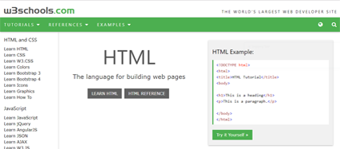
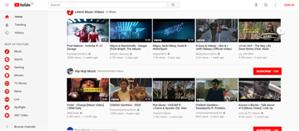
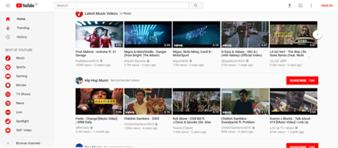
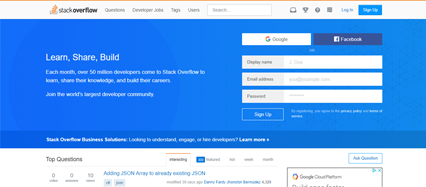
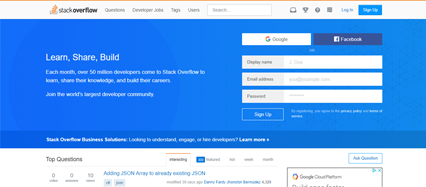

W3 Schools
W3Schools is a website that provides a variety of solutions to problems relating with coding. Specifically W3Schools provides solutions to HTML and CSS, it was originally launched in 1998 to provide tutorials to beginners who wanted to learn HTML and CSS and still provides tutorials to beginners and advanced developers through interactive exercises and videos. Later on W3Schools started to release tutorials about Javascript, PHP, SQL etc. as more programming languages were being popularised. The main reason why W3Schools is popular amongst many programmers is because it shows the code itself needed to create the functions.Programmers can use that code to help them solve their own problems.
Youtube
Youtube is a video sharing website that allows anyone to upload videos about any sort of topic. Viewers are able to like, share and comment on videos. This platform is very good for prorammers as there are many videos that are related to programming. Due to the vast amount of videos about coding any sort of programmer can find their solution and answers on Youtube. Youtube isn't limited to certain topics and so if you have a problem with Java then there will be a solution to any Java porblems, vice versa if you have a problem with any sort of programming langauge then there is a video to your problem with the answers. Youtube is especially good for those who are visual learners as the platform specialises in videos therefore it will be easier for those learners to solve their problems.
 
Udemy
Udemy is a online learning platform. How Udemy works is that experts from around the world can create online courses and release them to the public. The public can either view or buy these courses and use them for their benefit. Udemy was created in 2009 and offers many types of courses including courses to do with programming. This is a very good resource for programmers to use as the courses are made by experts therefore it is trusted and reliable. iF you do not find the course helpful then the customer can get his/her money back and choose another course from another expert. Due to the vast amount of courses programmers have a lot of choice and thus have many answers to their problems.
Stack Overflow
StackOverflow is a Q and A website (Question and Answer) that allows users to post questions and the public can answer those questions showing them solutions to their problems. The webiste was made in 2008, the overall idea was that when a user has posted a question and responses came through users could then vote the answers and show whether they are helpful or not.This then allows other users to quickly find out the solutions to the problems and the best method to do so. Stackflow also allows users to gain points or badges which then shows that they are trustworthy and knowledgable in their specific industry or field. This means that if any users have any questions in terms of a specific topic then they can ask those who have badges or points as they know what they are talking about.
 
